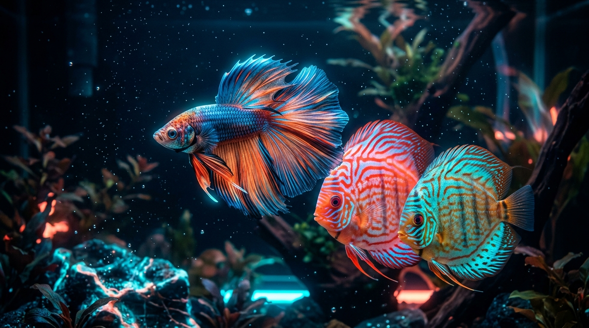
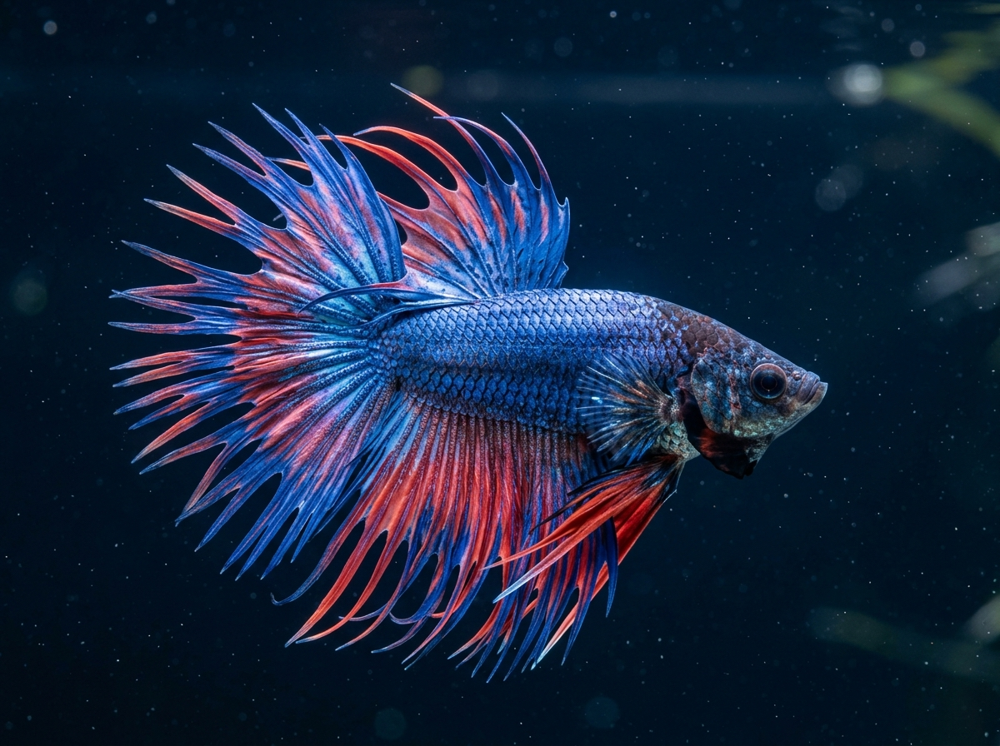
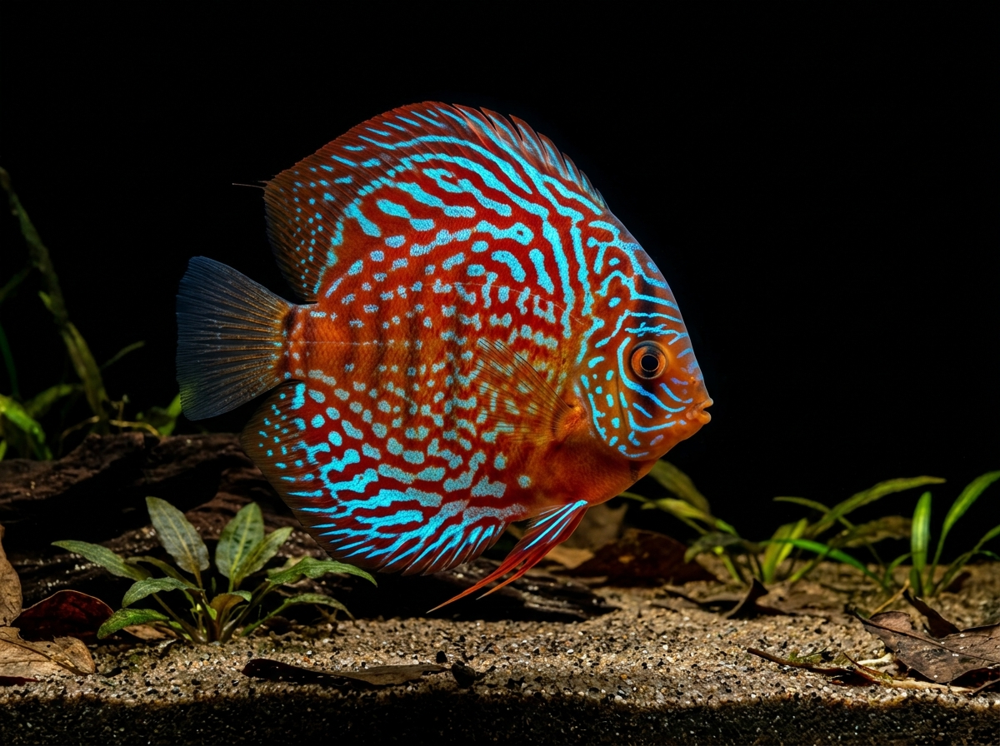
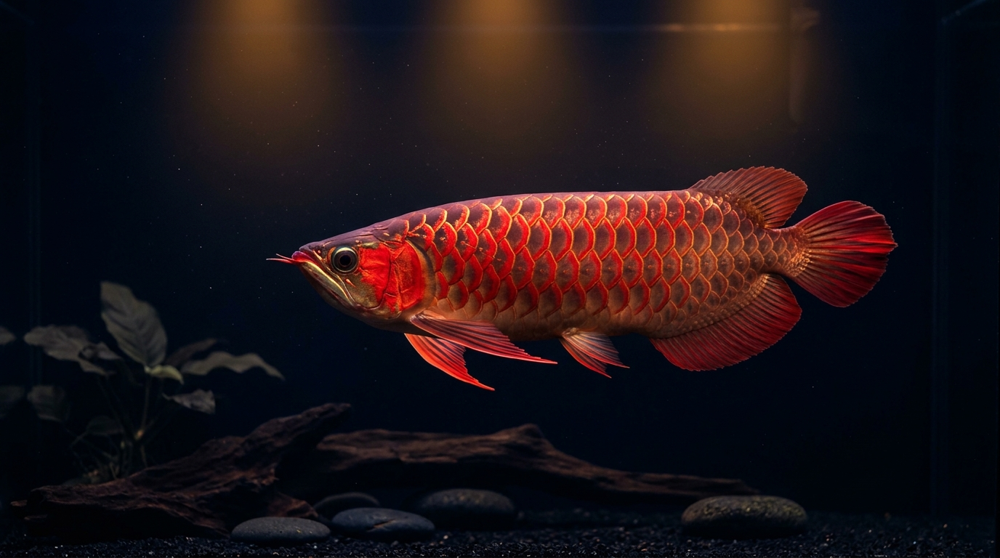
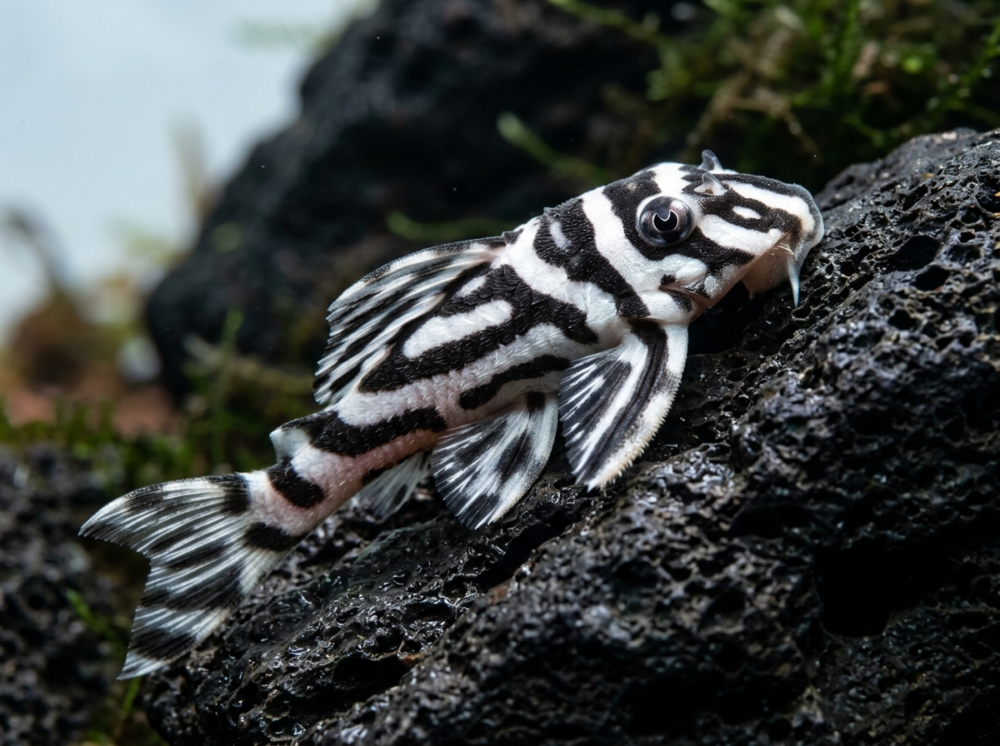

專注於熱帶水族生態的美學與科學。深度收錄 28 款 Corydoras 鼠魚珍稀名品與頂級旗艦觀賞魚，呈現極致微距攝影、精確水質參數與職人繁育智慧。

pH 5.5 ~ 6.5 · 軟水雨林生態系
匯聚水族界極具藝術價值與收藏地位的標誌性品種，每種皆承載著大師級繁育技藝與極致水下姿態。
50 組完全不重複物種，深度涵蓋長吻/短吻/雷射/巨斑鼠魚、帝王異型、南美短鯛與精品脂鯉，提供多維搜尋與即時過濾。
輸入魚缸規格與預計飼育量，精準計算淨水容量、過濾器每小時循環流量、加溫功率與生物密度安全指標。
聚焦於魚鱗金屬折射、鬍鬚微觀構造、背鰭針芒與自然游姿，感受生命在水中的極致美感。



